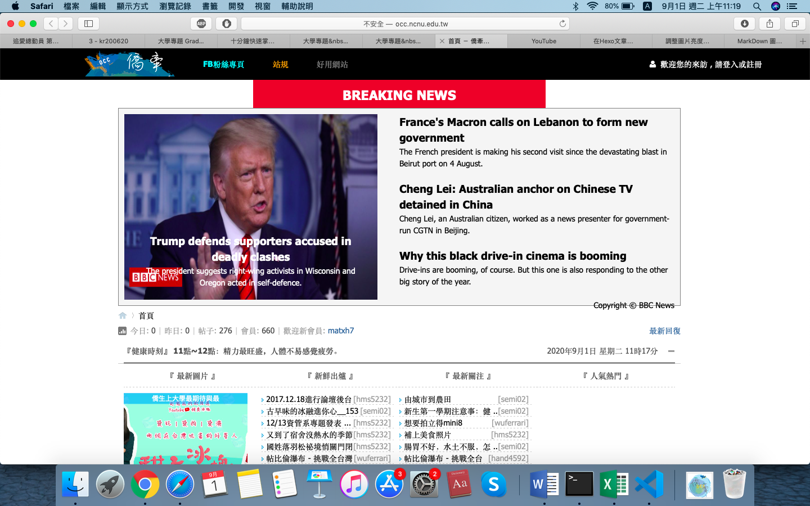
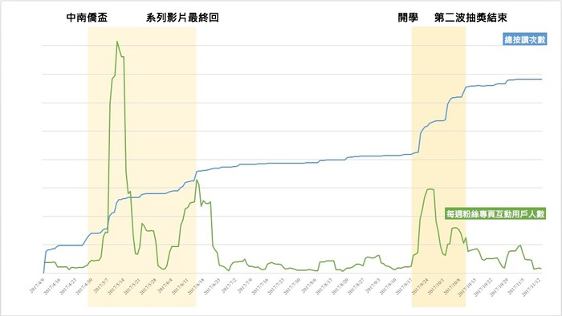
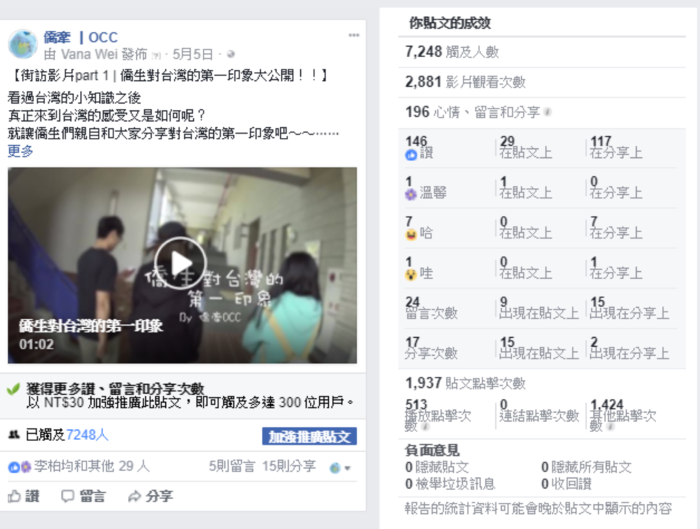

暨南大學是全台外籍生比例最高的學校 其中有非常大一部分是僑生
我們和僑生同學相處的日常 有溫馨、有歡笑、也有很多意想不到的趣事
「 僑牽 」是我們為僑生同學們打造的平台
Nation Chi Nan University is the school with the highest proportion of foreign students in Taiwan. A very large part of it is overseas Chinese. The daily life we spend with our overseas students is warm, funny, and there are many unexpected things. “Overseas Chinese” is our platform for overseas students.
想法與現況 Concept：
依據教育部統計處發布資料顯示，臺灣現有近 12,000 名僑生，每年 約以 10%的比例快速成長。然而僑生來台前的資訊蒐集，多限於官方的 法規、政策、各校簡章等，生活問題少有相關文章可供參考。而來台後 面對文化與生活習慣差異，甚至是學業問題，多是仰賴同儕之間交流與 扶持。
在經過比較相關性高的各大交流平台中，我們選擇建立「僑牽」論 壇，除了可以讓資料有足夠地方可以彙整呈現，對於發問、交流等需求 也相當出色。另外現行社群媒體盛行，我們也將使用臉書作為推廣管道， 以觸及更多族群。
我們期盼透過創立臉書粉絲專頁以達到招攬使用者、宣傳活動等功 能;創立論壇以達到官方及非官方資訊彙整提供、諮詢空間、生活貼近 度等呈現。讓已來台僑生提供生活經驗分享，初來台之僑生更能融入台 灣的生活，欲來台僑生可初步認識台灣。更進一步希望台灣生也能了解 僑生們的不同文化民情，增進國際交流，擴展國際視野。
According to the statistics released by the Statistics Department of the Ministry of Education, there are nearly 12,000 overseas Chinese students in Taiwan, which grows rapidly by about 10% each year. However, the information gathering before the overseas Chinese came to Taiwan was mostly limited to official regulations, policies, and school briefs. There are few relevant articles on life issues for reference. After coming to Taiwan, facing the differences in culture and living habits, and even academic problems, most of them rely on exchanges and support between their peers.
Among the major exchange platforms that have been highly correlated, we chose to establish the “Overseas Chinese” forum. In addition to allowing the information to have enough places to be presented, the demand for questions and communication is also excellent. In addition, the current social media is prevalent, and we will also use Facebook as a promotion channel to reach more ethnic groups.
We look forward to the creation of Facebook fan pages to reach users, publicity activities, etc.; to create forums to achieve official and unofficial information collection, consultation space, life closeness and other presentations. Let the overseas Chinese students who have come to Taiwan provide life experience sharing. The overseas Chinese who come to Taiwan will be able to integrate into Taiwan’s life. Taiwanese who want to come to Taiwan can get to know Taiwan. I further hope that Taiwanese students can also understand the different cultures and customs of overseas Chinese, enhance international exchanges and expand their international horizons.

進行步驟及活動成效
步驟 Step：
Step1. 建立粉絲專頁
Step2. 宣傳活動
Step3. 建置論壇
成效 Result：
 